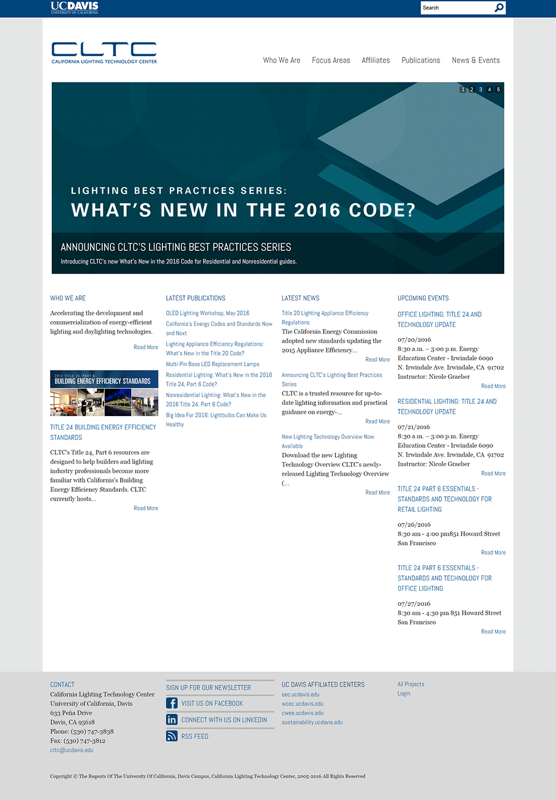
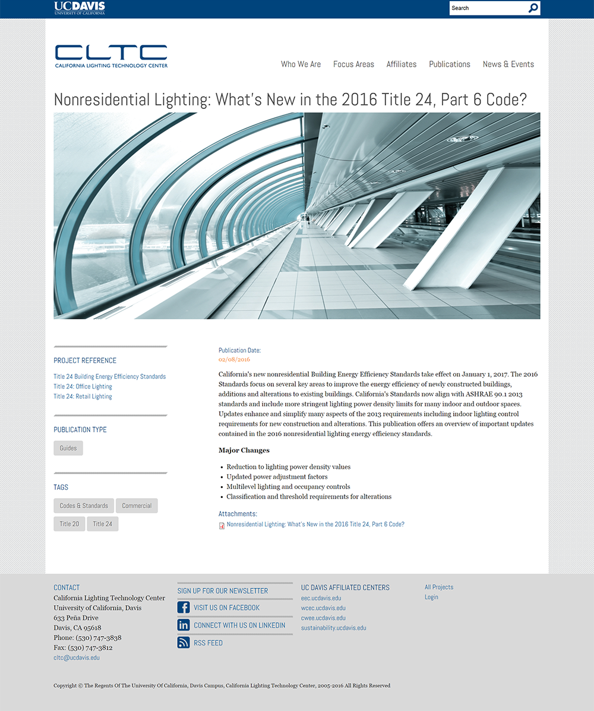
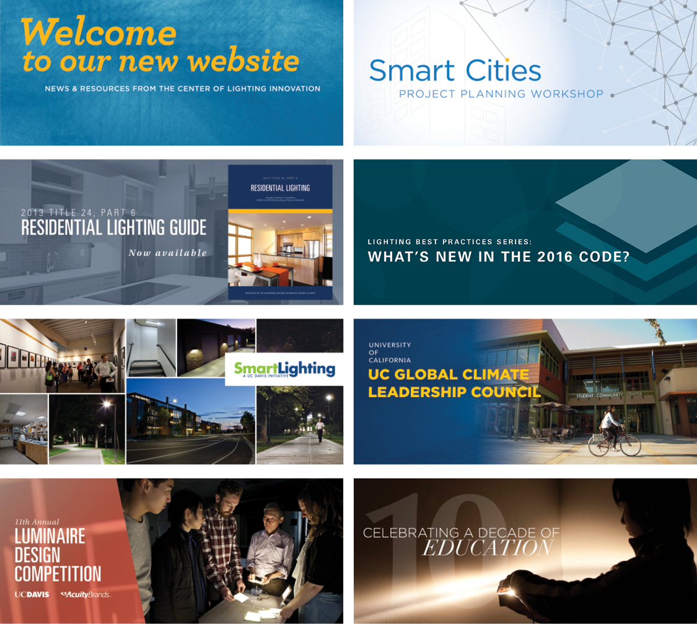

California Lighting Technology Website
Client: California Lighting Technology Center, UC Davis
The California Lighting Technology Center is a lighting research center at UC Davis.
In 2013, I conducted and managed a major redesign of the CLTC website,
updating content management system to a Drupal platform.
Over the course of this effort, I developed new site architecture, content taxonomy,
wireframes and prototypes. I collaborated with campus web developers to implement redesign.
Improved overall brand consistency of the CLTC website.
User Experience & Information Design; Branding



